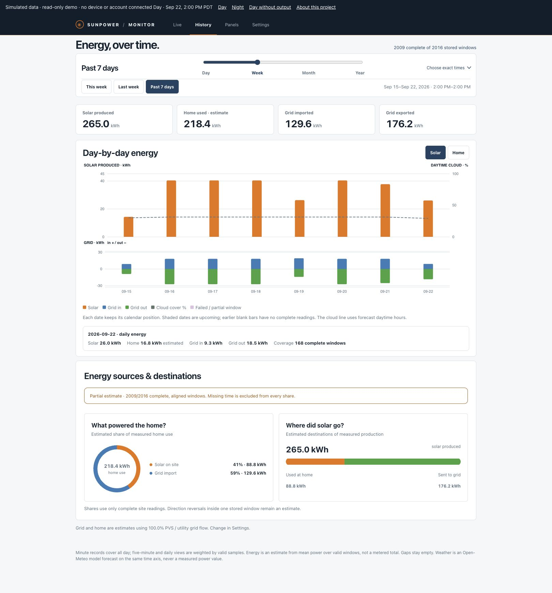
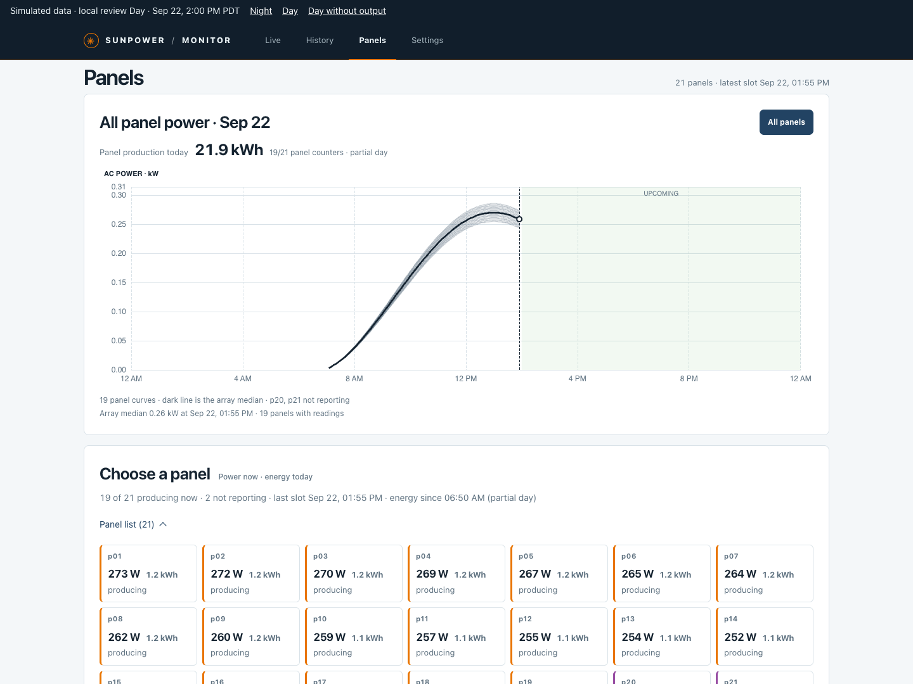

2024 / SUNPOWER
设备仍在，服务已变。Equipment stays. Services change.
原 SunPower 于 2024 年 8 月申请破产保护。已安装的系统，仍需要持续监控与长期记录。The former SunPower filed for Chapter 11 in August 2024. Installed systems still need monitoring and a lasting record.
SEC 公告SEC filing ↗专为 SunPower PVS6 · 无电池系统FOR SUNPOWER PVS6 · WITHOUT BATTERIES
实时查看发电与用电，回看能源历史，比较每块面板的表现。直接读取 PVS6，把记录保存在自己的 Cloudflare 账号中。See live energy flow, revisit your history, and compare every panel. Read directly from PVS6 and keep the record in your own Cloudflare account.
SunPower PVS6 Always-on collector Cloudflare
直接读取 PVS6Straight from your PVS6
仅授权用户可见Authorized access only
外网中断，仍可记录Records without internet
数据缺口如实保留Gaps stay visible
WHY THIS EXISTS
这个项目起于一个家庭需求：为已经安装的 SunPower PVS6，保留自己的长期记录。One household’s need: keep an independent, lasting record of an installed SunPower PVS6 system.
2024 / SUNPOWER
原 SunPower 于 2024 年 8 月申请破产保护。已安装的系统，仍需要持续监控与长期记录。The former SunPower filed for Chapter 11 in August 2024. Installed systems still need monitoring and a lasting record.
SEC 公告SEC filing ↗TODAY / SUNSTRONG
SunStrong 实时监控免费，历史分析属于高级功能，租赁客户例外。本项目让你独立保留记录。SunStrong lists live monitoring as Basic and history as Premium, with exceptions for lease customers. Keep an independent record.
官方说明 · 2026-09-29Official features · 2026-09-29 ↗THIS PROJECT / PVS6
在自己的账号中保存发电和用电历史。回看每天的变化，把短暂波动放回更长的时间里理解。Keep production and consumption history in your own account. Revisit daily changes and put short fluctuations in a longer context.
项目的设计思路How it works ↗01 / A CLOSER LOOK
不只是几个数字。把发电、用电、天气和面板表现放在一起，理解家里发生了什么。More than a set of numbers. Connect production, consumption, weather, and panel performance to understand your home.
01 LIVE
查看当前发电、家庭负载和电网方向。用当日功率曲线，追踪从日出到此刻的变化。Check solar, home load and grid direction. Follow the daily power curve from sunrise to the latest reading.
查看实时界面View the live screen02 HISTORY
按日、周、月、年回看能源记录。切换功率与电量，结合天气查看用电来源和去向。Review days, weeks, months and years. Switch power and energy, add weather, and trace energy sources and destinations.
查看历史界面Explore energy history03 PANELS
比较所有面板的功率曲线与状态。选中单块面板，查看它的历史记录和每日发电表现。Compare panel power curves and reporting states. Select an individual panel to inspect its history and daily production.
查看面板界面Meet your panels

实际界面 · 模拟数据。数据含义与功能边界见Actual interface · simulated readings. For data definitions and feature limits, see 项目说明Project notes ↗
GET STARTED
还在选择方案？Still choosing a solution? 与 Home Assistant、Sunflower 和 SunStrong 对比Compare Home Assistant, Sunflower and SunStrong ↗